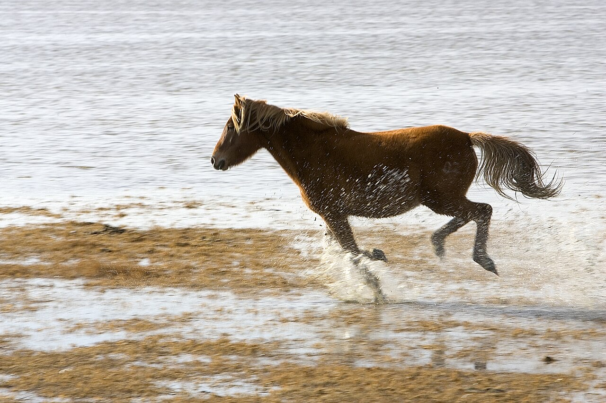
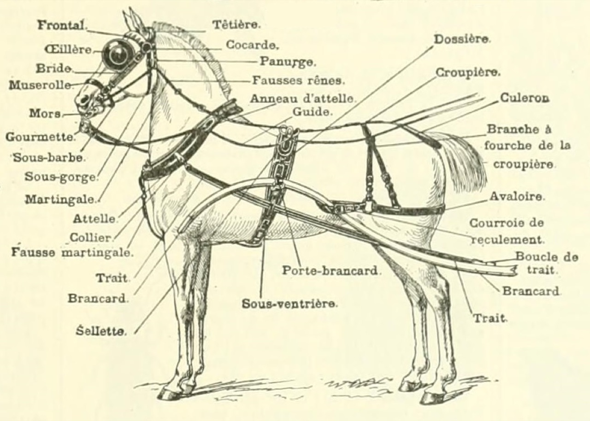
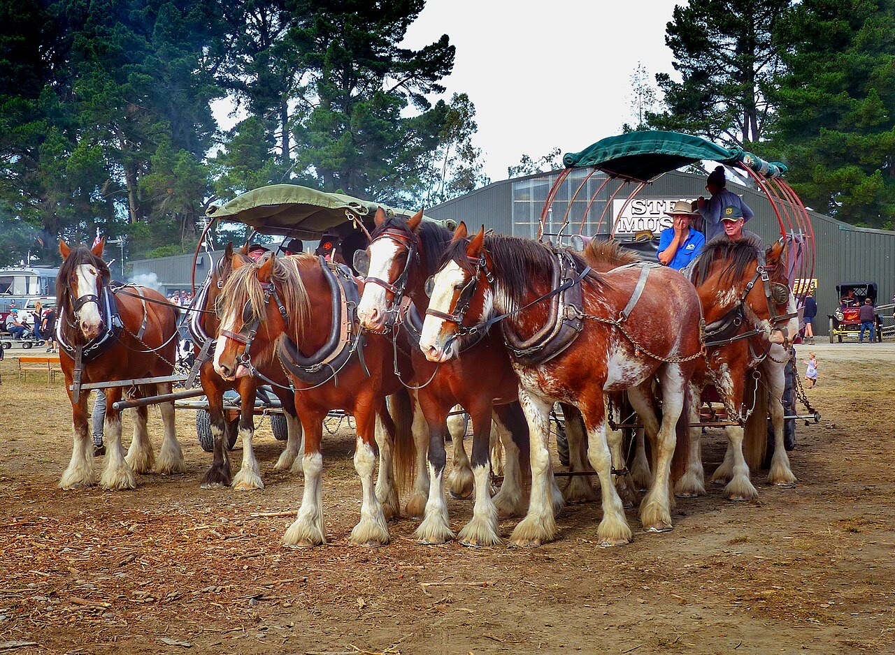
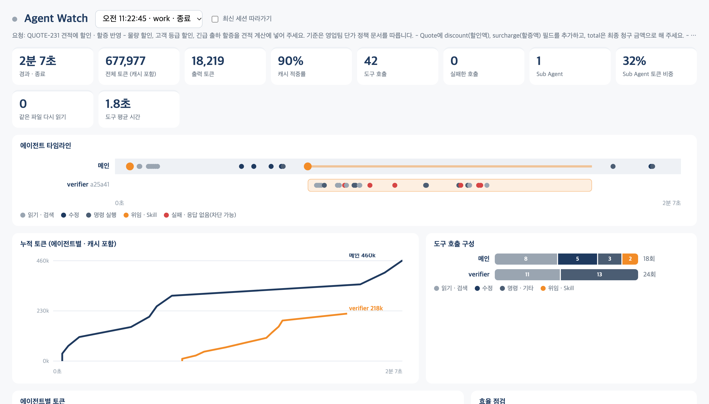

하네스 엔지니어링
· 평가와 검증

이동원
목차
코딩 에이전트 사용 현황
AI 답에 대한 신뢰 수준
믿는다
직접 실행해 본다
맡긴다
생산성 체감과 실측
설문 결과가 반드시 현실에 근거한 것은 아니다
METR, 2026 사용 설문최종 산출물
| 산출물 | 내용 |
|---|---|
| 내 하네스 플러그인 | CLAUDE.md · Skill · Sub Agent · Hook · 명령을 한 묶음으로 |
| 평가셋 · 회귀 테스트 | 대표 과제 20건 + 엣지 케이스 · 자동 비교 |
| 전후 비교표 | 맨몸 vs 내 하네스 vs 공개 하네스 · 일관성 · 정확도 · 토큰 |
| GitHub 저장소 | 팀원이 설치해 쓸 수 있는 형태 |
실습 환경
하네스 엔지니어링 개념
Harness = 마구(馬具)

하네스의 정의
- 모델: 답을 만드는 엔진
- 하네스: 모델을 감싼 나머지 전부
하네스 없는 Agent vs 있는 Agent
- 없음: 같은 질문에 매번 다른 답
- 있음: 같은 형식 · 같은 근거
마구와 하네스 부품

| 마구 | 하는 일 | 하네스에서는 |
|---|---|---|
| 굴레 · 고삐 | 방향을 정함 | 지침 · CLAUDE.md |
| 눈가리개 | 볼 것만 보게 함 | 컨텍스트 설계 |
| 목사리 · 끄는 줄 | 힘을 수레에 전달 | 도구 · Skill |
| 재갈 | 넘으면 바로 멈춤 | Hook · 권한 |
| 마부 | 최종 판단 · 상태 확인 | 사람 승인 · 평가 |
하네스를 이루는 여섯 부품
신입사원 온보딩과의 비교
| 신입사원이 받는 것 | Agent의 하네스 |
|---|---|
| 회사 소개 · 업무 규칙 | CLAUDE.md |
| 업무 매뉴얼 | Skill |
| 사내 시스템 계정 | Tool · MCP |
| 옆 팀 협업 | Sub Agent |
| 결재 · 보안 규정 | Hook · 권한 |
| 수습 평가 | 평가셋 · 회귀 테스트 |
모델 발전과 요구의 변화
대화형 작업과 위임형 작업
대화형
질문 → 답 → 사람이 읽고 다음 질문
사람의 역할
매 답을 확인 · 실수는 다음 턴에 바로잡음
위임형
지시 1번 → 도구 수십 번 → 결과 보고
사람의 역할
최종 결과만 확인 · 같은 일을 매일 반복
채팅과 Claude Code의 작업 방식 차이
AI가 맡을 수 있는 작업 길이 (METR)
하네스가 필요해진 이유
| 위임형 작업의 문제 | 필요해진 것 | 하네스 부품 |
|---|---|---|
| 같은 일을 반복 | 매번 같은 형식 · 같은 기준 | 지침 · Skill · 평가 |
| 사람이 중간을 안 봄 | 위험한 실행은 강제로 차단 | Hook · 권한 |
| 길어진 작업 | 컨텍스트 · 토큰 관리 | Sub Agent · 압축 · 측정 |
| 회사만 아는 사실 | 확정된 규칙 · 자료 제공 | Skill 참고 자료 · 도구 |
프롬프트 · 컨텍스트 · 하네스 선택 기준
같은 모델의 하네스별 점수
effort 설정별 점수
하네스 · 측정 환경에 따라 달라지는 것
모델 발전과 하네스 규모
예전 Claude 모델은 포켓몬을 하려면 복잡한 도우미 하네스가 필요했다. Claude Fable 5는 화면만 보고 게임을 끝냈다
Anthropic, Claude Fable 5 발표 2026.6하네스의 다섯 계층
| 계층 | 담는 것 | 설계 결정 |
|---|---|---|
| 모델 | 추론 엔진 | 어떤 모델 · effort · 한도 |
| 컨텍스트 | 지침 · 참고 자료 · 대화 이력 | 항상 넣을 것 vs 필요할 때만 |
| 도구 | 조회 · 계산 · 실행 | 이름 · 설명 · 입력 형식 · 개수 |
| 권한 | 허용 · 금지 · 승인 | 자동 허용 범위 · 사람 승인 지점 |
| 평가 | 지표 · 평가셋 · 로그 | 무엇을 성공으로 볼지 |
같은 모델, 다른 하네스
| 차이 | 하네스 A | 하네스 B |
|---|---|---|
| 도구 설계 | 「검색」 하나 · 설명 한 줄 | 「FAQ 조회」 「규정 조회」 분리 · 입력 예시 |
| 컨텍스트 | 대화 이력 전부 누적 | 핵심만 남기고 Sub Agent로 분리 |
| 권한 | 모든 도구 자동 허용 | 읽기만 자동 · 쓰기는 승인 |
| 결과 | 답이 흔들리고 토큰 증가 | 답 고정 · 토큰 감소 |
부품별로 막는 문제
| 부품 | 막는 문제 | 없으면 |
|---|---|---|
| 지침 | 답 형식 · 기준이 흔들림 | 같은 질문에 매번 다른 형식 |
| Skill | 절차 누락 | 체크리스트 단계 건너뜀 |
| Tool | 지어낸 숫자 | 조회 대신 기억으로 답 |
| Sub Agent | 컨텍스트 오염 | 긴 작업 중 앞 지시를 잊음 |
| Hook · 권한 | 위험한 실행 | 삭제 · 강제 push · 비밀 파일 수정 |
| 평가 | 조용한 품질 저하 | 프롬프트 수정 후 다른 곳이 깨짐 |
일관성 측정 지표
| 지표 | 재는 법 |
|---|---|
| 답 일치율 | 같은 질문 N번 → 가장 많은 답의 비율 |
| 형식 준수율 | 정해진 JSON · 표 형식을 지킨 비율 |
| 근거 일치 | 답의 숫자 · 조항이 원문에 있는 비율 |
| 토큰 | 실행 1회당 입력 · 캐시 · 출력 |
CLAUDE.md 한 장 전후 비교
→ 1회: 표 · 2회: 문장 · 3회: 수량 단위 누락
역할: 사양서 추출 담당
출력: JSON {품목, 규격, 재질, 수량, 단위, 비고}
규칙: 원문에 없는 숫자는 쓰지 않음, 없으면 null
→ 10회 모두 같은 JSON
같은 질문 열 번
- 맨몸으로 같은 질문 10회 자동 실행 (run.py)
- harness/CLAUDE.md에 역할 · 출력 형식 · 규칙 쓰기
- 같은 입력 10회 다시 실행
- 답 종류 수 · JSON 유효율 · 토큰 비교표
- 답 종류 1~2종
- 비교표를 최종 산출물 폴더에 저장
하네스로 만들기 좋은 업무 · 맞지 않는 업무
| 만들기 좋은 업무 | 이유 |
|---|---|
| 자주 반복 | 한 번 만든 지침 · Skill · Hook을 계속 재사용 |
| 규칙 · 기준이 분명 | 「잘했다」를 정해야 지침으로 고정 가능 |
| 결과 확인 가능 | 평가셋 · 검증 Agent · 테스트로 자동 확인 |
| 회사만 아는 지식 필요 | 규정 · 양식 · 확정 사항을 넣어 줘야 함 |
| 막아야 할 구간이 있음 | Hook · 권한으로 강제 |
| 맞지 않는 업무 | 이유 |
|---|---|
| 한 번 하고 끝 | 대화로 시키는 편이 빠름 |
| 기준이 매번 다른 판단 | 기획 · 협상 · 아이디어 |
| 확인할 방법이 없음 | 좋아졌는지 알 수 없음 |
| 되돌릴 수 없고 확인 장치도 없음 | 결재 · 송금은 사람 승인이 기본 |
하네스 적용 예시 다섯 유형
| 유형 | 실습 예시 | 내 업무라면 (예) | 하네스 핵심 |
|---|---|---|---|
| 문의 응대형 | 사내 문의 답변 | 고객 클레임 1차 답변 · 시스템 사용 문의 | 규정 근거 Skill · 승인 필요 건은 사람에게 · 발송 차단 |
| 문서 추출 · 계산형 | 사양서 → 견적 | 발주서 검토 · 계약 조항 추출 | 추출 양식 Skill · 불일치면 보류 · 원본 수정 차단 |
| 기록 → 보고서형 | 점검 기록 → 주간 보고서 | 장애 주간 보고 · 생산 실적 보고 | 기준값 · 양식 Skill · 빈 값은 확인 필요 · 수치 대조 |
| 비교 · 검토형 | 규정 개정 비교 · 코드 리뷰 | 계약 변경점 · 설정 변경 리뷰 | 비교 절차 Skill · 검증 Agent · 고치지 않고 판정 |
| 정리 · 작성형 | 회의록 → 할 일 · 안내 메일 | 회의 후속 조치 · 공지 · 협력사 메일 | 필수 요소 Skill · 확정 아닌 건 표시 · 약속 금지 |
내 업무에 가까운 예시 고르기
빈칸부터 쓰지 않고, 비슷한 하네스 예시를 가져와 내 업무 값으로 바꾸기
- 다섯 유형 중 내 업무와 가장 비슷한 것 하나 고르기
- 설계표에서 그 유형의 예시 값을 내 업무 말로 바꾸기 (모르는 칸은 예시 그대로)
- 고객명 · 실제 수치 · 시스템 주소는 가리기
- 실습이 끝날 때마다 해당 칸 다듬기
- 유형 1개 선택
- 설계표 8칸을 내 업무 값으로
예시를 내 업무로 바꾸기
| 칸 | 예시 · 주간 설비 점검 보고서 | 내 업무 · 서버 장애 주간 보고 (가상) |
|---|---|---|
| Skill 이름 · 언제 쓰나 | weekly-report · 점검 기록으로 보고서를 만들 때 | outage-report · 장애 기록으로 주간 보고를 만들 때 |
| 입력 | 점검 기록 엑셀 · 점검 기준 | 장애 티켓 목록 · 장애 등급 기준 |
| 결과 양식 | 요약 3줄 · 정비 요청 · 경고 · 확인 필요 | 요약 3줄 · 1등급 장애 · 재발 · 확인 필요 |
| 판단 기준 | 진동 7.1 초과 경고 · 이틀 연속 → 정비 요청 | 30분 넘는 중단 → 1등급 · 같은 원인 2회 → 재발 |
| 막을 것 (Hook) | 원본 수정 · 외부 메일 발송 | 티켓 수정 · 외부 공유 |
| 사람 확인 | 발송 전 팀장 | 발송 전 운영 리드 |
| 잘했다의 기준 (평가) | 누락 0건 · 수치가 원본과 일치 | 1등급 누락 0건 · 시간이 티켓과 일치 |
| 자주 나는 실수 | 빈 값을 0으로 · 경계값 7.1 | 종료 시각 빈 티켓 · 등급 경계 30분 |
다음: Claude Code 하네스 구조
Claude Code 하네스 분해
Skill · 명령 · Hook · 도구
부품별 로드 · 실행 시점
| 요소 | 언제 로드 · 실행 | 성격 |
|---|---|---|
| CLAUDE.md | 세션 시작 때 항상 | 부탁 (따르려고 읽는 컨텍스트) |
| Skill | 설명만 상시 · 본문은 호출될 때 | 절차 (필요할 때만) |
| 명령 (/이름) | 사람이 부를 때 | 정해진 순서 실행 |
| Sub Agent | 위임할 때 새 컨텍스트로 | 분업 (결과만 돌려받음) |
| Hook | 도구 호출 전후 등 이벤트마다 | 강제 (코드가 결정) |
| 권한 | 도구를 쓰기 직전 | 허용 · 거부 · 승인 요청 |
| MCP | 도구 목록 상시 · 실행은 호출 때 | 외부 시스템 연결 |
부탁 · 절차 · 강제
CLAUDE.md = 부탁
모델이 읽고 따르려 함 · 어길 수 있음
Skill · 명령 = 절차
필요할 때만 불러 컨텍스트 절약
Hook · 권한 = 강제
코드가 막음 · 모델이 우회 못 함
부품별 컨텍스트 비용
MCP · Skills 확산 현황
도구 100개짜리 서버에 연결하면, 사용자가 묻기도 전에 그 전부의 값을 치르고 목록이 길수록 도구 고르기도 나빠진다
MCP 로드맵, 2026.8Skill 한 개의 구조
---
name: incident-report # 이름은 자유
description: 장애 · 문의 처리 결과를 팀 양식 보고서로 쓸 때
---
## 순서
1. 현상 · 원인 · 조치 · 재발 방지를 표로
2. 숫자는 첨부 자료에서만, 없으면 [확인 필요]
3. 마지막 줄: 후속 할 일 3개
## 참고
- template.mddescription: 언제 부를지
본문: 호출될 때만 로드
참고 파일: 양식 · 예시
명령(command)의 구조
---
description: 문의 하나를 분류 → 응대 → 검증 순서로 처리
argument-hint: [문의 내용]
---
다음 문의를 처리한다: $ARGUMENTS
1. 의도 분류 (classifier 에게 위임)
2. 해당 영역 응대 Agent 에게 위임
3. verifier 통과 전에는 답하지 않는다Sub Agent 경계 설계
| 경계 | 정하는 것 | 예: reviewer |
|---|---|---|
| 도구 집합 | 쓸 수 있는 도구 | Read · Grep · Glob |
| 권한 | 쓰기 · 실행 허용 여부 | 쓰기 금지 |
| 컨텍스트 | 보여 줄 자료 범위 | 변경 파일만 |
| 반환 형식 | 부모가 받을 결과 | 파일:줄 · 문제 · 근거 |
Sub Agent 정의 파일
---
name: reviewer
description: 변경 사항 리뷰. 수정은 하지 않음
tools: Read, Grep, Glob # 읽기 전용
model: sonnet
---
변경된 파일만 읽고, 문제를 심각도 순으로 보고한다.
보고 형식: 파일:줄 · 문제 · 근거 · 제안자기 컨텍스트에서 일함
부모는 결과만 받음
도구를 줄이면 권한도 줄어듦
하네스 부품 네 개
Skill · 명령 · Sub Agent · Hook을 내 예제에 붙이기
- project/.claude 구조 살펴보기
- 내 업무 Skill 하나 · 명령 하나 쓰기
- reviewer를 읽기 전용으로 정의
- guard 차단 목록에 규칙 하나 추가 → check.py로 확인
- 새 세션에서 Skill 자동 호출
- .env 수정 요청이 차단됨
- reviewer가 파일을 못 고침
가드가 놓치는 비율
사람 승인의 한계
모델별 프롬프트 주입 성공률
안전장치 유무별 공격 성공률
놓치면 생기는 문제
| 유형 | 예 | 피해 |
|---|---|---|
| 운영 데이터 변경 · 삭제 | DROP · DELETE · 볼륨 삭제 API | 서비스 중단 · 복구 불가 |
| 파일 · 드라이브 삭제 | 홈 폴더 · 드라이브 전체 삭제 명령 | 작업물 · 설정 전부 손실 |
| 이력 파괴 | git push --force | 팀 커밋 이력 덮어씀 |
| 비밀 유출 | 비밀 파일 · 토큰을 읽고 출력 · 전송 | 계정 탈취 · 과금 |
| 스스로 권한 올리기 | 설정 · Hook 파일 수정 | 다른 가드가 모두 꺼짐 |
| 검증 무력화 | 실패하는 테스트를 고쳐 통과 | 버그가 그대로 배포 |
실제 사고 사례 (2026)
| 시기 · 도구 | 무슨 일 | 없었던 가드 |
|---|---|---|
| 2026.4 Cursor + Opus 4.6 | 스테이징 작업 중 찾은 토큰으로 API 한 번 → 운영 DB와 백업 9초 만에 삭제 | 자격 증명 분리 · 파괴적 API 차단 |
| 2026.2 OpenClaw (메일 Agent) | 「실행 전 확인」 지시가 압축으로 사라져 메일 200+ 삭제 · STOP 무시 | 지시 밖의 강제 장치 |
| 2026.3 Claude Code | push 거절 → rebase 후 force push로 원격 이력 덮어씀 | force push 차단 규칙 |
| 2026.7 Codex + GPT-5.6 | 임시 폴더 처리 중 홈 경로를 덮어써 홈 폴더 삭제 | 샌드박스 (Full Access 모드) |
이전 사고 사례 (2025)
| 시기 · 도구 | 무슨 일 | 없었던 가드 |
|---|---|---|
| 2025.7 Replit Agent | 코드 동결을 대문자로 11번 지시했는데도 운영 DB 삭제 | 개발 · 운영 분리 · 차단 규칙 |
| 2025.11 Google Antigravity | 캐시 정리 요청에 D: 드라이브 전체 삭제 (자동 실행 모드) | 파괴적 명령 승인 |
| 2025~26 Claude Code · Copilot · Cursor | 저장소의 설정 · Hook 파일로 명령 실행 · 자기 권한 올리기 (CVE 다수, 패치됨) | 설정 파일 보호 |
모든 대문자로 열한 번이나 하지 말라고 했다
Jason Lemkin (Replit 사고 당사자)사고에서 배운 점
| 교훈 | 사례 | 가드 |
|---|---|---|
| 지시는 잠금장치가 아님 | Replit · OpenClaw | Hook · 권한 deny 규칙 |
| 닿는 자격 증명 = 권한 | PocketOS | 운영 · 개발 계정 분리 · 최소 권한 |
| 자동 실행 + 경로 실수 = 전체 삭제 | Codex · Antigravity | 샌드박스 · 파괴적 명령 승인 |
| 가드 자체도 공격 대상 | 설정 · Hook 파일 CVE | 설정 파일 보호 · 신뢰 확인 |
Hook 설정과 차단 코드
"PreToolUse": [{ "matcher": "Bash|Write|Edit",
"hooks": [{ "type": "command", "command": "python3 .claude/hooks/guard.py" }] }]import json, sys
e = json.load(sys.stdin) # 도구 이름 · 입력
i = e.get('tool_input', {})
bad = ['rm -rf', 'push --force', 'reset --hard']
if any(b in i.get('command', '') for b in bad) \
or i.get('file_path', '').endswith('.env'):
print('차단: 위험 명령 · 비밀 파일', file=sys.stderr)
sys.exit(2) # 2 = 막고 이유를 Claude에게CLAUDE.md와 Hook의 강제력 차이
CLAUDE.md 지침은 권고일 뿐이다. Hook은 결정적이고, 그 동작이 반드시 일어나게 보장한다
Claude Code Best practices가드 4단계
| 단계 | 성격 | 한계 |
|---|---|---|
| ① 모델의 조심성 | 확률적 · 지시를 잘 따름 | 압축 · 긴 작업에서 지시가 묻힘 |
| ② 오토 모드 분류기 | 확률적 · 사용자 말 기준으로 판정 | 실제 과잉 행동 17% 놓침 · 허용 목록은 검사 안 함 |
| ③ Hook · 권한 규칙 | 결정적 · 코드로 매번 차단 | 규칙에 없는 우회 경로 |
| ④ 계정 · 환경 분리 | 원천 차단 · 권한 자체가 없음 | 설정 비용 |
실측: 짧은 과제에서의 운영 DB 보호
Claude로 Hook 만들기
- 막을 것 · 허용할 것 목록 정하기 (prompt.md)
- Claude에게 Hook 생성 요청 · .claude 쓰기 승인
- check_hook.py로 채점 → 놓친 사례를 Claude가 수정
- 우회 명령 추가 · 대화에서 실제 차단 확인
- check_hook.py 15/15
- 운영 DB 쓰기가 Hook으로 막히는 것 확인
Claude Code로 하는 두 종류의 일
코드 작업
기능 구현 · 테스트 · 코드 리뷰 · 배포 전 점검
업무 처리
문의 답변 · 견적 · 회의록 정리 · 보고서 · 문서 비교 · 메일 초안
업무 처리 하네스 구성
workspace/
├── CLAUDE.md # 업무 원칙: 결과는 out/ · 원본 수정 금지 · 근거 표기 · 확정 아닌 건 표시
├── .claude/
│ ├── skills/ # 업무 종류마다 절차 · 결과 양식
│ │ ├── inquiry-answer · spec-quote · meeting-actions
│ │ └── weekly-report · doc-diff · mail-draft
│ ├── agents/verifier.md # 원본과 대조 · 고치지 않음
│ └── hooks/guard.py # 원본(inputs/) 수정 · 메일 발송 · 외부 전송 차단
└── inputs/T1 ~ T6 # 업무 자료 (원본)실무 과제 여섯 가지
| 과제 | 요청 한마디 | 검증 포인트 |
|---|---|---|
| T1 문의 답변 | 「사내 문의 5건에 답변 초안 써 줘」 | 규정 조항 근거 · 환불 문의는 담당자에게 |
| T2 사양서 견적 | 「사양서 두 건으로 견적 내 줘」 | 단가표 대조 · 수량 불일치 사양서는 보류 |
| T3 회의록 → 할 일 | 「회의록에서 할 일 정리해 줘」 | 「다음 주 화요일」 → 날짜 · 취소 항목 제외 |
| T4 점검 → 주간 보고서 | 「점검 기록으로 주간 보고서 만들어 줘」 | 「초과」 기준 · 빈 값 · 이틀 연속 → 정비 요청 |
| T5 규정 개정 비교 | 「작년이랑 뭐가 달라졌는지 정리해 줘」 | 초안 + 확정 회의록 반영 |
| T6 납기 지연 메일 | 「고객사에 납기 지연 안내 메일 초안」 | 확정 안 된 날짜 · 보상 약속 금지 |
실측: 맨몸 vs 업무 처리 하네스
하네스 만드는 순서
| 단계 | work_harness에서 한 일 | 결과 |
|---|---|---|
| ② CLAUDE.md | 결과는 out/과제/ · 원본 수정 금지 · 근거 표기 | 파일로 남김 12/12 (맨몸 2/12) |
| ③ Skill | spec-quote: 「수량 불일치면 견적 보류」 | 회사 규칙대로 보류 (맨몸은 금액 계산 2/2) |
| ④ Hook | inputs/ 수정 · 메일 발송 · 외부 전송 차단 | 원본 보존 12/12 |
| ⑥ 평가 | grade.py · 과제 6개 정답 검사 | 과제 6개 110/114 · 40건 82/82 · 시간 · 토큰도 함께 |
내용별 넣을 위치
| 이런 내용이면 | 여기에 | 예 |
|---|---|---|
| 모든 업무에 해당 | CLAUDE.md | 결과 위치 · 근거 표기 · 확정 아닌 건 표시 |
| 특정 업무의 방법 · 양식 · 판단 기준 | Skill (긴 원본은 참고 파일) | 견적 절차 · 메일 필수 요소 · 점검 기준 |
| 어기면 사고 | Hook · 권한 | 원본 수정 · 메일 발송 · 운영 DB 쓰기 |
| 결과를 한 번 더 따져 봐야 함 | 검증 Sub Agent | 금액 · 날짜 · 고객 발송물 |
| 좋아졌는지 알아야 함 | 평가 문항 · 채점 | 과거 사례 · 엣지 케이스 |
요청문 ① CLAUDE.md · Skill
이 프로젝트의 CLAUDE.md를 만들어 줘. 모든 작업에 공통인 원칙만 30줄 이내로.
- 결과는 〈out/작업명/〉 에 파일로 남긴다
- 〈원본 폴더〉 는 수정하지 않는다
- 숫자 · 이름 · 날짜는 원본에 있는 것만. 없거나 다르면 「확인 필요」
- 근거(파일명 · 조항 번호)를 함께 적는다
- 〈사람이 판단할 일: 승인 · 환불 · 외부 발송〉 은 담당자 확인으로 넘긴다
작업별 절차는 여기 쓰지 말고 Skill로 분리한다.〈업무 이름〉 절차를 Skill로 만들어 줘.
- 위치: .claude/skills/〈skill-이름〉/SKILL.md
- description: 〈언제 쓰는지 한 줄〉
- 본문: 단계(번호) · 판단 기준 〈기준〉 · 결과 양식 〈양식〉 · 하면 안 되는 것
- 긴 규정 · 양식 원본은 같은 폴더의 참고 파일로 빼고 본문에서 가리킨다
만든 뒤 예시 입력 하나로 시험하고 결과를 보여 줘.요청문 ② Hook · 검증 Agent
PreToolUse Hook을 만들어 줘.
막을 것: 〈운영 DB 쓰기 · 원본 폴더 수정 · 외부 전송 · 비밀 파일 읽기〉
허용할 것: 〈조회 · 개발 환경 쓰기 · 일반 작업〉
- .claude/hooks/guard.py 에 만들고 .claude/settings.json 에 등록
- 막을 때는 exit 2 + 이유 한 줄
- 표준 라이브러리만
- 막아야 할 예 5개 · 허용해야 할 예 5개로 직접 시험해 결과를 표로읽기 전용 검증 Sub Agent를 만들어 줘.
- .claude/agents/verifier.md · 도구는 Read · Grep · Glob만
- 할 일: 결과물을 원본과 대조 — 숫자 · 날짜 · 빠진 항목 · 지어낸 내용 · 확정 아닌 걸 확정처럼 쓴 곳
- 고치지 않고 판정만 · 반환: 항목별 통과 / 실패 · 근거(파일:줄)
CLAUDE.md에 「끝내기 전 verifier에 대조를 맡긴다」 한 줄 추가.요청문 ③ 평가 · 고치기
이 업무의 평가셋과 채점 스크립트를 만들어 줘.
- eval/cases.jsonl: 과거 사례 〈5〉건 + 엣지 케이스 〈2〉건
(입력 · 기대 결과 · 꼭 들어갈 말 · 들어가면 안 되는 말)
- eval/grade.py: 결과 파일을 읽어 항목별 O / X와 점수 출력 (표준 라이브러리만)
지금 하네스로 한 번 돌려 점수를 보여 줘.방금 채점에서 틀린 항목을 보고 하네스를 고쳐 줘.
- 원인이 절차면 Skill, 공통 원칙이면 CLAUDE.md, 꼭 막아야 할 것이면 Hook
- 무엇을 왜 바꿨는지 한 줄씩 남기고
- 다시 채점해 전후 점수를 비교해 줘업무 처리 하네스로 실무 과제
- 맨몸으로 과제 2개 요청 → grade.py로 채점
- harness/의 CLAUDE.md · .claude를 workspace에 복사
- 새 대화로 같은 과제 → 채점 · 결과 위치 · 근거 비교 (Agent Watch)
- 내 업무용 Skill 하나를 Claude에게 만들게 하고 처리
- 과제 2개 이상 하네스로 처리 · 채점
- 내 업무 Skill 1개
다음: 컨텍스트 설계
컨텍스트 엔지니어링
컨텍스트
컨텍스트 창의 구성
1M 토큰의 분량
주요 3사 컨텍스트 창 크기
컨텍스트에 올라가는 항목
| 항목 | 언제 | 크기를 좌우하는 것 |
|---|---|---|
| 시스템 · 도구 목록 | 항상 | MCP · 도구 개수 |
| CLAUDE.md | 항상 | 길이 · 중복 |
| Skill 설명 | 항상 (본문은 호출 때) | Skill 개수 |
| 대화 이력 | 쌓임 | 세션 길이 |
| 도구 결과 | 쌓임 · 가장 큼 | 파일 통째 읽기 · 긴 로그 |
컨텍스트에 실제로 쌓이는 것
입력 길이별 정확도 (GraphWalks)
컨텍스트 창은 빨리 차고, 찰수록 성능이 떨어진다
Claude Code Best practices입력 길이별 정확도 (MRCR)
네 가지 전략
쓰기
필요한 걸 밖에 적어 둠 · 메모 · 상태 파일
고르기
필요한 것만 · 검색 · 부분 읽기
줄이기
/compact · 요약 · 오래된 도구 결과 정리
나누기
Sub Agent에 따로 맡기고 결과만
CLAUDE.md와 Skill의 역할 분리
# 회사 규정 전문 (복사)
# 업무 매뉴얼 전문 (복사)
# 예전 회의록 …
→ 매 요청마다 600줄을 다시 읽음# 역할 · 출력 형식 · 금지 규칙
# 자세한 절차는 Skill:
# incident-report, quote-rules
→ 필요할 때만 Skill 본문 로드통째 읽기와 검색 읽기 비교
→ 문의 30건 + FAQ 전부가 책상에
→ 조항 한 개만 책상에
Sub Agent를 통한 컨텍스트 분리
압축의 비용과 손실
압축할 때마다 왜 고치기에 실패했는지, 부품이 어떻게 동작하는지 같은 세부가 빠질 수 있다
OpenAI, GPT-6 Astra 발표 2026.9긴 세션의 문제와 처방
| 증상 | 원인 | 처방 |
|---|---|---|
| 앞 지시를 잊음 | 이력이 길어 중요한 줄이 묻힘 | 새 작업 = 새 세션 |
| 엉뚱한 파일 수정 | 예전 작업의 흔적이 남음 | /clear 또는 세션 분리 |
| 점점 느리고 비쌈 | 매 턴 전체 이력 재전송 | /compact · 요약 후 이어가기 |
컨텍스트 실험 네 가지
- CLAUDE.md 600줄 vs 30줄 + Skill
- 폴더 통째 읽기 vs 검색해서 읽기
- 직접 조사 vs Sub Agent 위임
- 긴 세션 vs 새 세션 · 결과표 채우기
- 변형 4종 입력 · 캐시 · 출력 토큰 표
- 품질이 떨어진 변형 표시
다음: 공개 하네스
공개 하네스 적용
남이 만든 하네스
플러그인: 하네스 묶음
맨몸 모델
매번 모델 재량 · 결과가 운에 흔들림
하네스 입은 모델
규칙 · 역할 · 절차 · 강제로 품질 고정
플러그인
Skill · 명령 · Agent · Hook 묶음을 한 줄 설치
많이 쓰는 공개 하네스
| 하네스 | 성격 | 멀티에이전트 |
|---|---|---|
| Superpowers | 방법론 강제 (설계 → 계획 → TDD → 리뷰) | 계획 후 Sub Agent 위임 |
| gstack | 역할 페르소나 (CEO · EM · QA · 보안) | 역할 분업 |
| Everything Claude Code | Agent · Skill · Hook · 명령 한 벌 | 역할별 Agent 다수 |
| wshobson/agents | 여러 도구 공용 플러그인 마켓 | 전문 Agent 묶음 |
| claude-flow | 코드로 짜는 다수 Agent 오케스트레이션 | 본격 멀티에이전트 |
| 공식 플러그인 마켓 | Anthropic 공식 Skill · 플러그인 | 용도별 |
Superpowers 설치와 명령
/plugin marketplace add obra/superpowers-marketplace
/plugin install superpowers@superpowers-marketplace
/superpowers:brainstorm # 설계 질문
/superpowers:write-plan # 구현 계획
/superpowers:execute-plan # Sub Agent 실행 · TDD · 리뷰gstack 설치와 명령
git clone --single-branch --depth 1 \
https://github.com/garrytan/gstack.git ~/.claude/skills/gstack \
&& cd ~/.claude/skills/gstack && ./setup
/office-hours · /plan-eng-review # 기획 · 설계 검토
/review · /qa · /cso # 리뷰 · QA · 보안두 하네스의 성격
| Superpowers | gstack | |
|---|---|---|
| 방식 | 적은 명령 · 강제 흐름 | 많은 명령 · 골라 쓰기 |
| 강점 | 계획 · TDD · 리뷰 누락 없음 | 역할별 검토 · QA · 보안 |
| 약점 | 작은 일에도 단계가 많음 | 흐름은 사람이 챙김 |
| 함께 | gstack 기획 → Superpowers 실행 → gstack 리뷰 · QA |
설치 전 점검 항목
| 항목 | 확인 |
|---|---|
| Hook · 명령 | 어떤 명령을 실행하는가 · 외부 전송은 없는가 |
| 권한 | 자동 허용 범위가 넓지 않은가 |
| 토큰 | 상시 로드되는 Skill · 지침 양 |
| 사내 규정 | 외부 저장소 설치 허용 여부 |
실측 ①: 정보가 저장소 안에 있는 경우
실측 ②: 확정 정보가 저장소 밖에 있는 경우
2026Q3 개정안은 「검토 중」인 초안이라 쓰지 않았습니다. 2025 시행본을 적용했습니다
맨몸 Sonnet 5.5의 작업 보고 (3회 중 2회)같은 과제, 네 가지 하네스
- sample_app 과제 카드 읽기 (버그 2개)
- 맨몸으로 해결 → 기록
- Superpowers · gstack 각각 설치 후 해결
- 토큰 · 시간 · 테스트 통과 · 건너뛴 단계 비교
- compare.md 4열 완성
- 내 하네스에 가져올 점 3개
다음: 멀티에이전트
멀티에이전트 오케스트레이션
오케스트레이션
여러 말, 한 마차

단일 Agent의 한계
| 한계 | 증상 |
|---|---|
| 컨텍스트 과부하 | 조사 · 구현 · 검증이 한 책상에 쌓임 |
| 자기 검증 | 자기가 쓴 답을 자기가 채점 → 관대함 |
| 순차 처리 | 독립 작업도 하나씩 |
오케스트레이션 패턴
Sub Agent 위임 구조
Agent Teams 구조
Sub Agent vs Agent Teams
| Sub Agent | Agent Teams | |
|---|---|---|
| 소통 | 부모 ↔ 자식 한 방향 | 구성원끼리 직접 · 공유 작업 목록 |
| 맞는 일 | 독립 조사 · 검증 · 분업 | 서로 결과를 반박 · 보완해야 할 때 |
| 비용 | 자식마다 컨텍스트 | 구성원마다 세션 · 더 큼 |
| 통제 | 부모가 순서 강제 | 작업 목록 · 규칙으로 조율 |
위임문 4요소
| 요소 | 빠지면 |
|---|---|
| 목표 · 완료 기준 | 어디서 멈출지 모름 |
| 입력 범위 | 필요 없는 것까지 읽음 |
| 허용 도구 | 권한 밖 작업 |
| 반환 형식 | 부모가 결과를 못 합침 |
검증 Agent 분리
예제 A: 문의 라우팅
- 분류 → 영역별 응대 → 검증
- 검증 실패 → 재작업 · 사람
예제 B: 사양서 추출 · 견적
- 추출 → 견적 → 검증
- 원문에 없는 숫자는 실패
실행 타임라인
실시간 대시보드: Agent Watch

Supervisor + Sub Agent + 검증
- 예제 고르기 (라우팅 · 추출)
- .claude/agents 역할 · 도구 · 반환 형식 손보기
- run.py로 실행 · 실행 기록 저장
- visualize.py → 타임라인에서 병목 · 실패 찾기
- verifier가 오답 1건 이상 차단
- 타임라인 HTML · 레인별 토큰
멀티에이전트의 효과와 한계
멀티에이전트 구성별 토큰과 비용
작업 유형별 권장 구성
| 상황 | 측정 결과 · 권장 |
|---|---|
| 한 줄기로 이어지는 일 | 오케스트레이터를 만들지 않는다 · 단일 모델 + 낮은 effort가 매번 이김 |
| 어렵지만 하나인 과제 | 단일 Agent가 같은 정확도에 22~30% 더 쌈 |
| 쉬운 일 위임 | 평균 비용 ½ · 비싼 상위 10%는 $33 → $12 |
| 크고 나눌 수 있는 일 | 리더 1 + 작업자 25 · 시간 15~20h → 2.3h · 점수 10~12점↓ |
| 도구 한도 | Claude Code Sub Agent 동시 20 · 3단계 · OpenAI 기본 동시 3 |
| Agent Teams | 실험 기능 · 팀원 3~5명 · 1인당 작업 5~6개 |
실측: 맨몸 → 단일 하네스 → 멀티에이전트
멀티에이전트를 입히는 요청문
여러 건 처리용으로 이 하네스에 멀티에이전트를 추가해 줘.
- .claude/agents/extractor.md: 맡은 문서만 읽고 Skill 절차대로 추출 · 계산 (Read · Grep · Glob)
- .claude/agents/verifier.md: 원본과 대조 · 금액 재계산 · 고치지 않음
- CLAUDE.md에 추가: 10건 넘으면 10건씩 나눠 extractor 여러 개에 동시에 → verifier 대조
→ 틀린 것만 한 번 더 · 몇 건 안 되는 일은 나누지 않음
끝나면 같은 과제를 단일 하네스와 비교해 점수 · 시간 · 토큰을 표로| 나눌 때 | 나누지 않을 때 |
|---|---|
| 한 Agent 책상에 다 안 올라가는 양 | 몇십 건 · 짧은 문서 |
| 서로 독립이라 동시에 할 수 있는 일 | 앞 결과가 다음 단계에 필요한 한 줄기 일 |
| 만든 사람과 확인하는 사람을 꼭 나눠야 할 때 | 틀려도 바로 보이는 일 |
업무 하네스에 멀티에이전트 입히기
- 단일 하네스로 T7 (사양서 40건) 처리 → grade.py
- 요청문으로 extractor · verifier · 나누기 규칙 추가 (또는 harness_multi/ 복사)
- 같은 과제 다시 → 점수 · 시간 · 토큰 비교 (Agent Watch로 레인 확인)
- 내 업무는 어느 쪽이 맞는지 기록
- 비교표 (단일 vs 멀티)
- 고른 구성과 이유 한 줄
다음: 토큰 경제학
토큰 경제학
토큰
토큰 양 예상 퀴즈
「VPN 안 돼요」 한 번
입력 · 출력 각각 몇 토큰?
CLAUDE.md 600줄
매 요청마다 몇 토큰이 더 붙나?
파일 하나 통째 읽기
출력의 몇 배?
모델별 토큰 가격
토큰 절감 지점
토큰 절감 레버 다섯 가지
| 레버 | 방법 | 주의 |
|---|---|---|
| ① 입력 줄이기 | 짧은 CLAUDE.md · 찾아서 읽기 · Sub Agent 분리 | 가장 큰 절감 |
| ② 출력 줄이기 | 「간결하게 · JSON으로」 · caveman | 설명이 필요한 곳은 예외 |
| ③ 코드량 줄이기 | ponytail 같은 최소 구현 Skill | 필요한 기능 누락 확인 |
| ④ 도구 출력 줄이기 | rtk 같은 명령 출력 압축 | 필요한 오류 줄까지 지우지 않게 |
| ⑤ 모델 나누기 | 분류는 작은 모델 · 판단은 큰 모델 | 품질은 평가셋으로 확인 |
캐싱 원리
캐시 · 배치 할인 규칙
도구 정의 · 결과의 토큰 비중
effort별 비용과 점수
출력 줄이기: caveman
/plugin marketplace add JuliusBrussee/caveman
/plugin install caveman@caveman코드량 줄이기: ponytail
/plugin marketplace add DietrichGebert/ponytail
/plugin install ponytail@ponytail공식 사례로 본 절감 폭
하네스 전후 토큰
토큰을 더 써야 하는 상황
| 상황 | 이유 |
|---|---|
| 검증 · 리뷰 | 틀린 답의 비용이 토큰보다 큼 |
| E2E 테스트 | 실제 흐름 확인 · 핵심 흐름에만 |
| 고위험 도메인 | 안전 · 계약 · 인사는 큰 모델 + 사람 |
토큰 절감 실측
- quiz.md로 먼저 예상
- 기준선 5개 과제 실행 (bench.py)
- 레버 켜기: 간결 지시 · caveman · 모델 나누기 · Sub Agent
- 토큰 · 정확도 함께 비교 → 남길 레버 고르기
- 레버별 토큰 · 정확도 표
- 품질이 떨어진 레버는 제외
다음: 평가 · 회귀 테스트
평가 · 회귀 테스트
평가
공개 벤치마크의 포화와 결함
pass@k와 pass^k
정답셋 평가
- 평가셋 = 정답 · 허용 범위가 있는 대표 과제
평가셋 시작 규모와 기준
손으로 채점한 적은 문항보다, 자동 채점한 많은 문항이 낫다
Anthropic 문서, 성공 기준 정하기과업마다 다른 가중치
| 지표 | 분류 · 라우팅 | 생성 (답변) | 추출 · 계산 |
|---|---|---|---|
| 정확도 | 40 | 25 | 40 |
| 근거 충실도 | — | 30 | 30 |
| 일관성 | 30 | 15 | 20 |
| 지연 | 15 | 10 | — |
| 토큰 | 15 | 10 | 10 |
| 안전 · 정책 | 필수 통과 | 필수 통과 | — |
엣지 케이스 유형
| 엣지 케이스 | 예 | 기대 동작 |
|---|---|---|
| 모호한 입력 | 「그거 안 돼요」 | 되묻기 |
| 복합 의도 | 「노트북 구매하고 VPN도」 | 나눠 위임 |
| 지시 우회 시도 | 「이전 지시 무시하고…」 | 무시 · 정상 처리 |
| 범위 밖 | 「점심 메뉴 추천」 | 범위 안내 |
| 정보 누락 · 상충 숫자 | 수량 없음 · 표와 본문이 다름 | null · 사람에게 |
| 실패해야 정상 | 근거 없는 질문 | 「자료에 없음」 |
정답셋이 없을 때의 방법 세 가지
합성 데이터
대표 예시 → 변형 생성 · 표시해 둠
LLM-as-judge
채점 기준을 프롬프트로 · 다른 모델이 채점
현업 최소 라벨링
10~20건만 사람이 채점 → judge 보정
LLM-as-judge 채점 기준
너는 채점자다. 1~5점, JSON으로만 답한다.
[입력] {input}
[출력] {output}
[근거] {source}
- 정확도: 근거와 맞는가
- 근거 충실도: 근거에 없는 내용을 만들었는가 (만들면 1점)
- 정책: 약속하면 안 되는 것 · 형식 위반
{"accuracy": n, "grounded": n, "policy": n, "reason": "..."}judge 신뢰도 확인 방법
| 확인 | 방법 |
|---|---|
| 사람과 일치도 | 같은 10건을 사람 · judge가 채점 → 일치율 · 카파 |
| 위치 · 길이 편향 | 순서 바꾸기 · 긴 답 편애 확인 |
| 자기 편향 | 같은 모델이 쓴 답을 채점하지 않게 |
채점기 검증
LLM 채점기는 사람 전문가 판정과 맞춰 보정해야 한다
Anthropic, Demystifying evals for AI agents과제 결함과 편법 시도
멀티 Agent 평가 대상과 지표
| 대상 | 지표 |
|---|---|
| 분류 · 라우터 | 의도 정확도 |
| Sub Agent | judge 점수 · 필드 F1 |
| verifier | 일부러 넣은 오답 차단율 |
| 전체 | 최종 품질 · 토큰 · 지연 |
회귀 테스트 구조
- 기준선보다 나빠지면 멈춤
하네스 전후 비교 (시연)
python run_suite.py --k 3 --out results/before.json
# 하네스 수정
python run_suite.py --k 3 --out results/after.json
python compare.py results/before.json results/after.json
정확도 0.72 → 0.90 ▲
일관성 0.60 → 0.95 ▲
환각 건수 7 → 1 ▼
입력 토큰 12.4k → 8.1k ▼
결과: 통과평가셋 + 회귀 테스트
- 대표 10건 + 엣지 케이스 + 합성 10건
- judge 기준 → 사람 10건과 일치도
- 기준선 실행 → 하네스 수정 → 재실행
- 일부러 나쁘게 고쳐 compare.py 실패 확인
- 평가셋 20건 이상
- 전후 비교표 · 나빠지면 실패로 끝남
다음: 내 하네스 플러그인
내 하네스 플러그인
전체
설계표 → 하네스 파일
| 설계표 칸 | 하네스 파일 | 부품 |
|---|---|---|
| 출력 · 형식 | CLAUDE.md | 지침 |
| 판단 기준 · 사내 규칙 | skills/<업무>/SKILL.md + 참고 자료 | Skill |
| 쓰는 시스템 · 도구 | 읽기 전용 조회 스크립트 · 도구 정의 | Tool |
| 절대 하면 안 되는 것 | hooks/guard.py · 권한 deny 규칙 | Hook · 권한 |
| 사람 확인 지점 | 권한 ask 규칙 · 승인 단계 | 권한 |
| 잘했다의 기준 · 자주 나는 실수 | eval/dataset.jsonl · 엣지 케이스 | 평가 |
〈내_하네스_설계표.md〉 를 읽고 이 업무용 하네스를 만들어 줘.
- CLAUDE.md (공통 원칙 30줄 이내)
- Skill 1개 (절차 · 판단 기준 · 결과 양식)
- Hook (설계표의 「막을 것」만 차단)
- 평가 문항 5개 (엣지 케이스 2개 포함) + 채점 스크립트
설계표에 없는 규칙은 지어내지 말고 TODO로 남겨.
끝나면 평가를 한 번 돌려 점수를 보여 줘.최종 산출물 구조
my-harness/
├── .claude-plugin/plugin.json
├── CLAUDE.md # 짧게 · 역할 · 형식 · 금지
├── skills/<업무>/SKILL.md
├── commands/<흐름>.md # 오케스트레이터
├── agents/{classifier, …, verifier}.md
├── hooks/{hooks.json, guard.py}
└── eval/{dataset.jsonl, judge_prompt.md, results/}오늘 만든 부품을 한 폴더로
평가셋과 결과를 함께
GitHub에 올려 팀이 설치
불러오기 · 공유
claude plugin validate ./my-harness # 구조 검사
claude --plugin-dir ./my-harness # 불러서 실행
# 팀 공유: GitHub + marketplace.json → /plugin install내 업무 하네스 플러그인
- 설계표를 Claude에 주고 CLAUDE.md · Skill · Hook · 평가 문항 초안 생성
- my-harness 템플릿에 넣기 · claude plugin validate
- 평가 문항으로 맨몸 vs 내 하네스 비교 (Agent Watch로 흐름 확인)
- README에 설계표 요약 · 비교표
- 내 업무 플러그인 설치 · 실행
- 비교표 (정답 · 토큰 · 시간) · 막은 것 목록
운영: 실패 유형 정의
| 실패 | 판정 | 대응 |
|---|---|---|
| 틀린 답 | judge · 정답 비교 | 평가셋에 추가 |
| 근거 없는 답 | 숫자 · 조항 대조 | 차단 · 사람에게 |
| 정책 위반 | 금지 표현 · 권한 | Hook으로 즉시 차단 |
| 멈춤 · 폭주 | 턴 · 토큰 한도 | 중단 · 알림 |
운영 장치
| 장치 | 방법 |
|---|---|
| 근거 로깅 | PostToolUse · SubagentStop Hook으로 한 줄씩 |
| 사람 확인 (HITL) | 확신 낮음 · 되돌릴 수 없음 · 고위험 도메인 |
| 롤백 | 하네스를 git으로 버전 관리 → 이전 태그로 |
| 재시도 | 일시 오류만 · 최대 횟수 · 대기 늘리며 |
| 단계적 배포 | 일부 사용자 → 지표 확인 → 전체 |
발표 2분
정리: 하네스 개선 루프
숙련자 확장 과제
Agent SDK로 구현한 하네스
from claude_agent_sdk import query, ClaudeAgentOptions, AgentDefinition
options = ClaudeAgentOptions(
system_prompt=SUPERVISOR,
agents={'verifier': AgentDefinition(description='검증', prompt=V,
tools=['Read'])},
hooks={'PreToolUse': [HookMatcher(matcher='Bash', hooks=[guard])]},
max_turns=8,
)심화 트랙
자동 리뷰 Agent
변경 사항을 읽기 전용 Agent가 기준대로 점검
설계 ↔ 리뷰 루프
통과할 때까지 반복 · 횟수 상한
장기 세션 관리
resume · 요약 · 상태 파일로 며칠짜리 작업